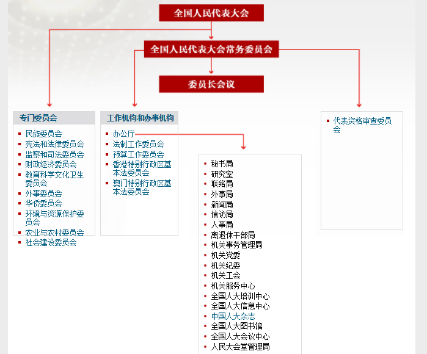

中华人民共和国全国人民代表大会是最高国家权力机关。它的常设机关是全国人民代表大会常务委员会。全国人民代表大会和全国人民代表大会常务委员会行使国家立法权。全国人民代表大会由省、自治区、直辖市、特别行政区和军队选出的代表组成。各少数民族都应当有适当名额的代表。
全国人民代表大会每届任期五年，每年举行一次会议。如果全国人民代表大会常务委员会认为必要，或者有五分之一以上的全国人民代表大会代表提议，可以临时召集全国人民代表大会会议。
全国人民代表大会会议于每年第一季度举行，由全国人民代表大会常务委员会召集。全国人民代表大会举行会议时，选举主席团主持会议。
2018年3月“两会”期间，栗战书同志当选为十三届全国人大常委会委员长。
2018年3月，根据第十三届全国人民代表大会第一次会议批准的党和国家机构改革方案，组建全国人大社会建设委员会。
全国人大内务司法委员会更名为全国人大监察和司法委员会。
全国人大法律委员会更名为全国人大宪法和法律委员会。
全国人民代表大会的机构组成如下图所示。
